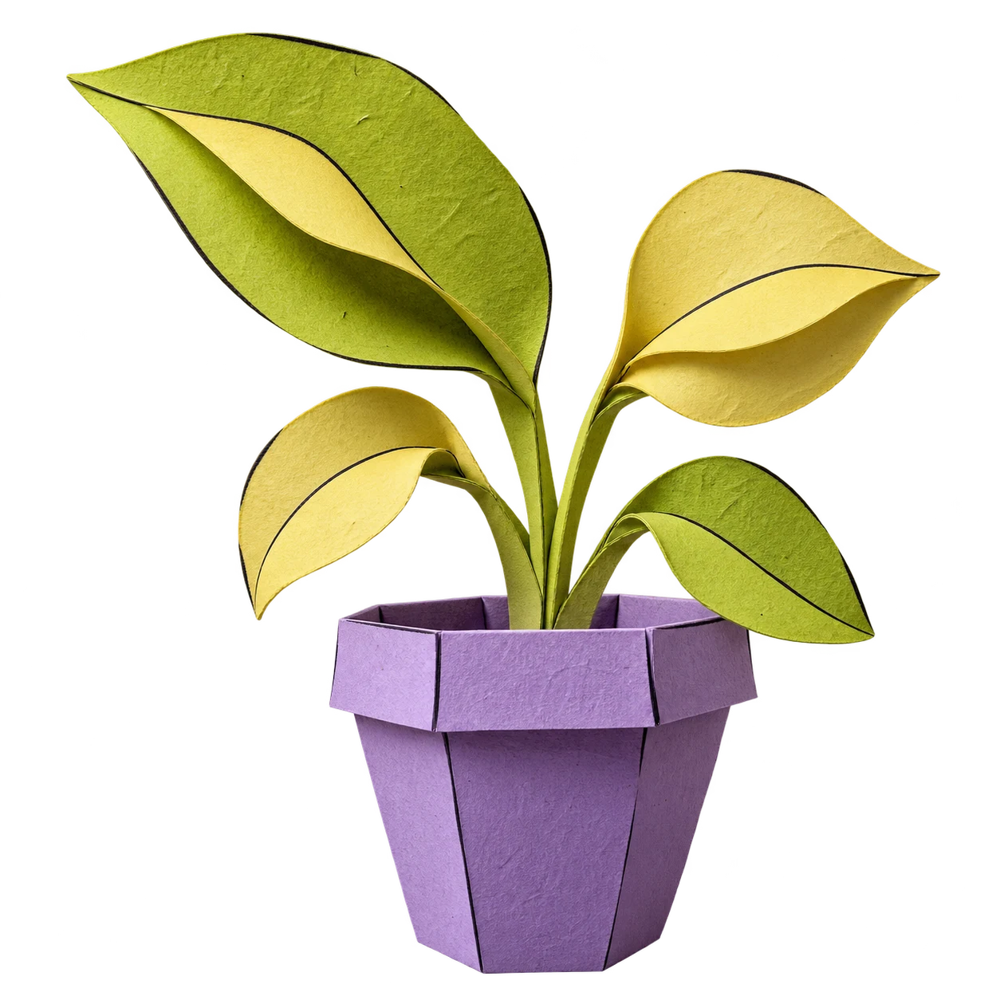

Give an idea
a little room.
A tiny garden. A bit of a plan.
Let’s see what you can grow.
Your garden, gently guided✳
One sunny windowsill is plenty. I’ve made room for 12 seedlings, with a simple plan to help them thrive.

12
seedlings planned
100%
Your windowsill starts here
We’ll grow one.